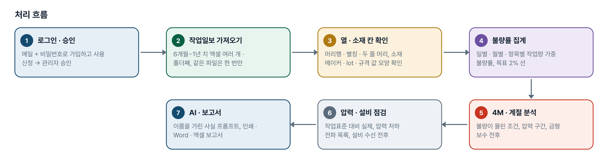
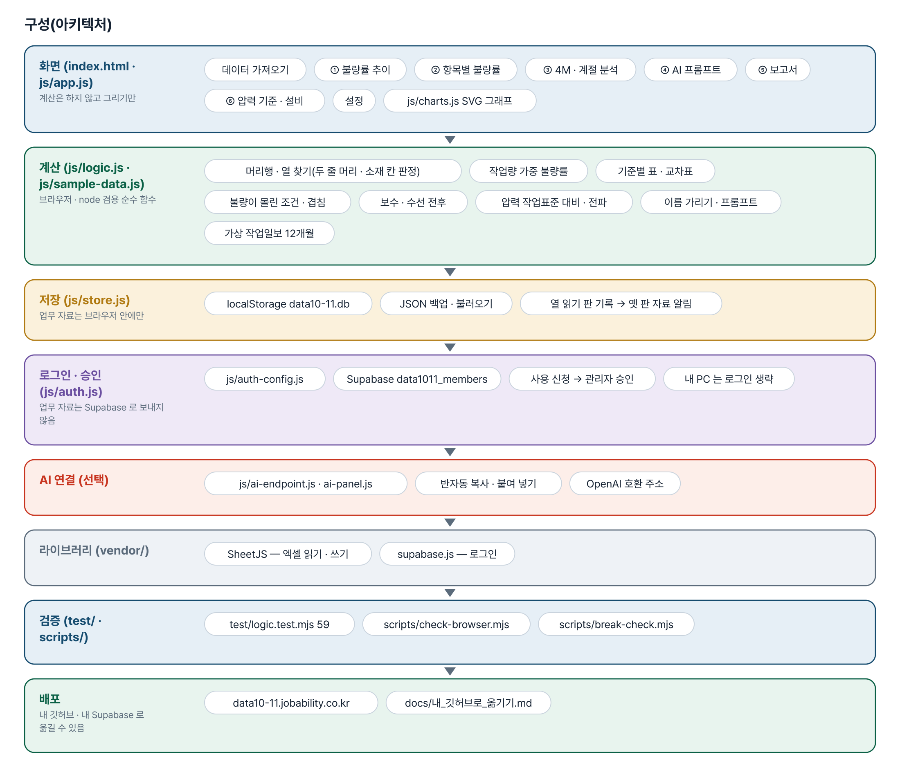
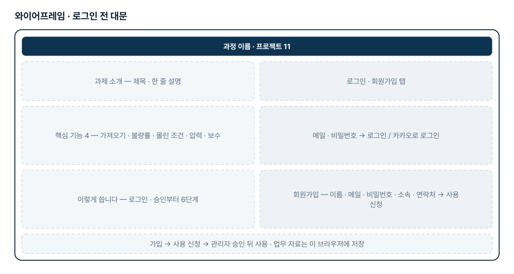
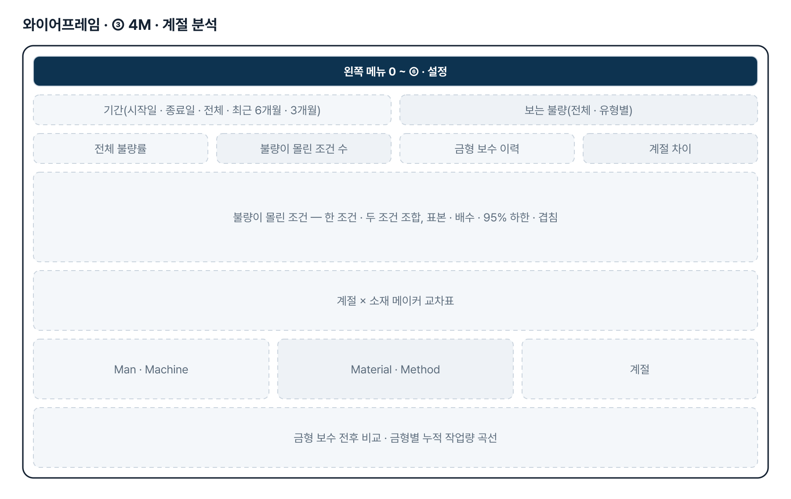
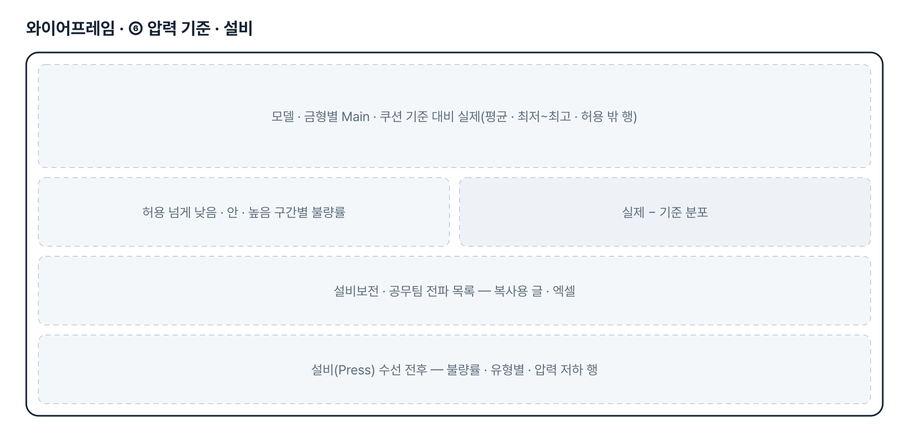
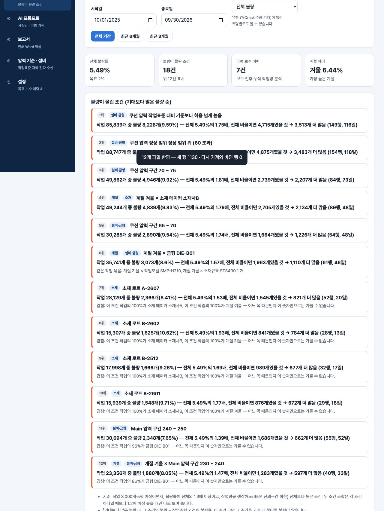

기획서 내려받기
파이프라인 · 아키텍처 · 와이어프레임 · 개발일지가 들어간 워드 문서입니다. 버전마다 따로 남깁니다.
| 버전 | 날짜 | 바뀐 점 | 파일 |
|---|---|---|---|
| v2.0 | 2026-11-10 | 최종 기획서 — 파이프라인 · 아키텍처 · 와이어프레임 정리 / 로그인 · 사용 신청 · 관리자 승인(요청자 Supabase 로 옮길 수 있게) / 로그인 전 대문 | 워드 내려받기 |
요구사항과 구현
| 기획서 요구 | 구현 |
|---|---|
| ① 작업 일별/월별 작업량 대비 불량률 분석표 | 작업량 가중 불량률(불량 합 ÷ 작업 합), 목표 2% · 지금 5% 선, 목표까지 줄일 불량 수, 엑셀 |
| ② 금형/소재별 작업량 대비 불량률 분석표 | 금형 · 소재 메이커 · 소재 lot · 소재규격 · 작업모델 · 작업자별 표, 표본 적음 표시, 금형 × 메이커 교차표 |
| 계절별 4M 근거로 Crack 원인을 추측할 데이터 | 「불량이 몰린 조건」 — 한 조건 · 두 조건 조합을 표본 · 배수 · 95% 하한으로 거르고 겹침 표시. AI 는 그 사실만으로 「추정」 정리 |
| 소재 문제 / 프레스 압력 문제 | Main · 쿠션 압력 구간과 정상 범위 아래 · 안 · 위, 계절 × 소재 메이커 교차표, 소재 lot 분석 |
| 금형 보수 시점 예측(사전 보수) | 일부 — 보수 전후 비교와 「보수 후 누적 작업량 이 구간부터 불량률 상승」 참고값. 예측은 이력이 쌓인 뒤 2단계 |
| 소재 메이커 · 소재규격 결과가 바뀐 것 같음(3차) | 두 줄 · 한 줄 머리의 애매한 「소재」 칸 결함 수정, 소재 칸 확인 카드 · 두 칸 바꾸기 · 열 연결 기억, 옛 판 자료 알림 |
| 소재 lot · 모델별 압력 작업표준 · 설비 수선 이력(3차) | 샘플에 소재 lot 칸, 압력 작업표준 표와 ⑥ 기준 대비 실제, 설비(Press) 수선 이력과 수선 전후 |
| 압력 저하 → 설비보전 · 공무팀 전파(3차) | 기준 − 허용보다 낮은 작업 목록 · 복사용 글 · 엑셀. 자동 발송은 하지 않음 |
| 팀 공유 | 2단계 — 지금은 브라우저 저장 + JSON 백업 |
그림으로 보기






개발일지
2026-11-10 · 최종 기획서 · 로그인
- 로그인 · 사용 신청 · 관리자 승인 적용, 로그인 전 대문
- 최종 기획서 v2.0(파이프라인 · 아키텍처 · 와이어프레임), README 정리
- 로직 테스트 59개 통과
2026-10-27 · 3차 반영 · 불일치 점검 · 머리 이름 점검
- 메이커 · 규격이 바뀌어 보인 원인 — 두 줄 머리에서 윗줄 「소재」가 규격으로 읽히던 결함 수정, 규격 표 = 금형 표일 때 알림
- 소재 lot 칸, 모델별 압력 작업표준(⑥ 화면), 설비 수선 이력, 압력 저하 전파 목록
- 수강생 PC 에서만 어긋남 — 216가지 상태 대조 정상, 옛 판 자료 알림 · 판 맞추기로 원인 후보를 막음
- 한 줄 머리 「소재 | 규격」에서도 같은 증상 — 분명한/애매한 이름 두 단계 + 값 모양 판정, 소재 칸 확인 카드
2026-10-26 · 비공개 전환
- 리포를 비공개로 바꾸고 README 의 Fork·ZIP 안내를 문의 안내로 교체
2026-10-20 · 기획서 v0.1 + 1단계
- 패들릿 제출 글을 기획서로 정리, 화면 7개 구현, 가상 작업일보 12개월
- 작업량 가중 불량률, 「불량이 몰린 조건」 세 겹 거름망과 겹침 표시, 보수 시점은 참고값
- 검사 35개, 일부러 깨뜨려 8가지 확인, 브라우저 1280 · 390px